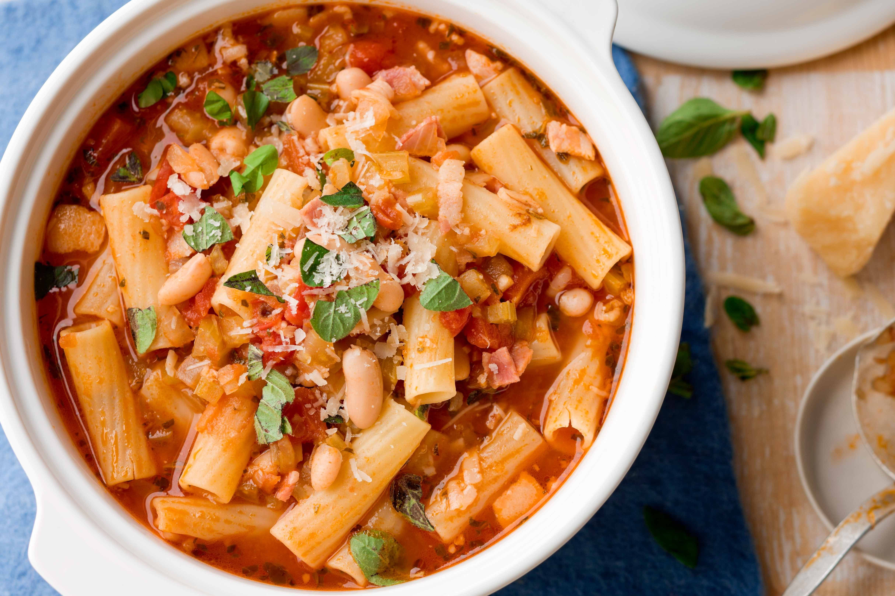

Recipe for Pasta Bolognese

Ingredients
- 1 pound (450g) ground beef
- 1 small onion, finely chopped
- 2 cloves garlic, minced
- 1 (28-ounce/800g) can crushed tomatoes
- 1/4 cup tomato paste
- 1 teaspoon dried oregano
- 1 teaspoon dried basil
- Salt and pepper to taste
- 1/2 cup red wine (optional)
- 1 pound (450g) pasta (spaghetti, fettuccine, or your choice)
- Grated Parmesan cheese for serving
- Fresh basil leaves for garnish (optional)
Instructions
-
In a large skillet or saucepan, cook the ground beef over medium-high
heat until it's browned and crumbled. Drain any excess fat.
-
Add the chopped onion and minced garlic to the skillet. Sauté for a few
minutes until the onions are translucent.
-
Stir in the crushed tomatoes, tomato paste, dried oregano, dried basil,
salt, and pepper. If you're using red wine, add it at this stage. Stir
everything together.
-
Reduce the heat to low, cover the skillet, and let the sauce simmer for
about 15-20 minutes, stirring occasionally. This allows the flavors to
meld and the sauce to thicken.
-
While the sauce is simmering, cook the pasta according to the package
instructions until it's al dente. Drain and set aside.
-
Taste the Bolognese sauce and adjust the seasoning as needed with more
salt, pepper, or herbs.
-
Serve the Bolognese sauce over the cooked pasta. Garnish with grated
Parmesan cheese and fresh basil leaves if desired.
- Enjoy your delicious Pasta Bolognese!